ログイン
SCR-ACC-001 · ログイン · パスワード再設定 · ログアウト
ログイン
- 1.1ログイン画面
- 1.2ログイン失敗
- 1.3アカウントロック
- 1.4ログイン成功（プラットフォームホーム）
1.1ログイン画面
概要
システムに接続する最初の画面です。登録済みのメールアドレスとパスワードで認証すると、セッションが発行され、プラットフォームホームに移動します。アカウントは管理者があらかじめ登録したものだけ使用できます。この画面から直接会員登録することはできません。
画面説明
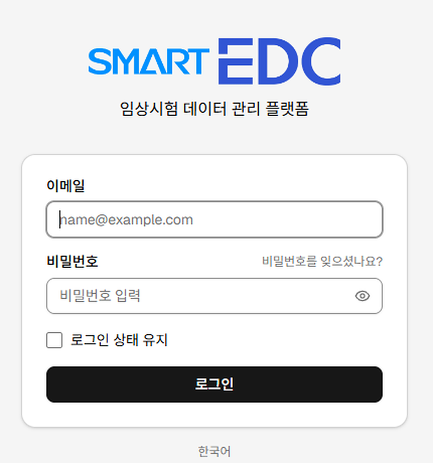
メール — アカウントとして登録されているメールアドレスを入力します。
パスワード — ログインパスワードを入力します。電子署名パスワードとは別の値です。
ログイン状態を保持 — 選択すると、ブラウザを閉じて開き直してもセッションが維持されます。共用のPCでは選択しないでください。
ログイン — 認証を要求します。成功するとプラットフォームホームに移動します。ただし、遷移先の画面はログインの状況によって異なります 1.4。
パスワードをお忘れですか？ — パスワード再設定画面に移動します 第2章。
パスワード表示切替 — 入力したパスワードを平文で確認します。周囲に他の人がいる環境では使用しないでください。
言語表示 — 現在の表示言語（韓国語）です。選択はできず、他の言語に切り替える機能はまだ提供されていません。
注意事項
必須確認 データ破損 · フォーム完了不可
- • 同時接続はアカウントにつき1つだけ許可されます。別の端末やブラウザで同じアカウントからログインすると、先に接続していたセッションは直ちに終了し、保存していない入力内容は保持されません。
1.2ログイン失敗
概要
メールアドレスとパスワードの組み合わせが一致しない場合、入力欄の下に警告が表示され、画面はそのまま維持されます。どちらが間違っているかは表示しません — アカウントの存在が分からないよう、両方の場合を同じ文言で扱います。
画面説明
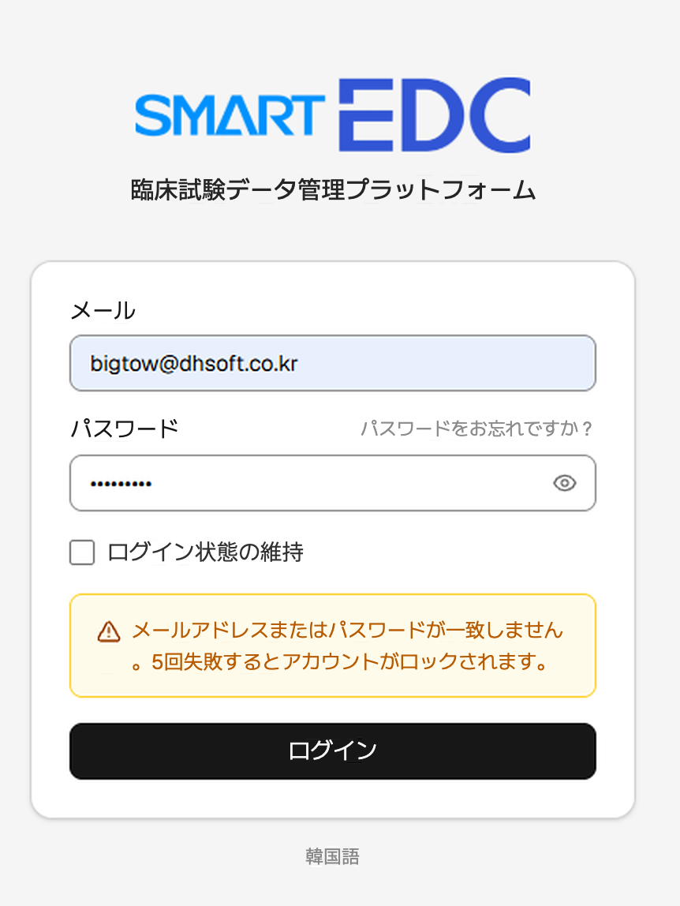
入力値はそのまま残ります。メールアドレスを入力し直す必要はなく、パスワードだけを修正して再試行できます。
ログイン を再度選択して再試行します。
「メールアドレスまたはパスワードが一致しません。5回失敗するとアカウントがロックされます。」という警告文が表示されます。残りの試行回数は表示されません。
パスワードが思い出せない場合は、再試行を繰り返さず、パスワードをお忘れですか？ から再設定してください 第2章。
注意事項
誤解しやすい動作
- • 失敗回数は、ログインに成功するまで累積されます。画面を更新したり、ブラウザを開き直したりしても初期化されません。
1.3アカウントロック
概要
ログインに5回連続で失敗するとアカウントがロックされます。ロックされたアカウントは、正しいパスワードを入力してもログインできません。一定時間が経過しても自動では解除されず、システム管理者がロックを解除する必要があります。
画面説明
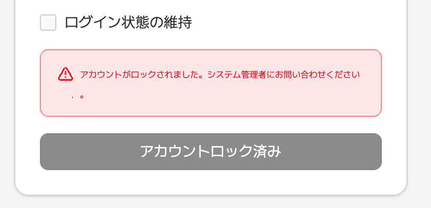
ログインボタンが「アカウントロック済み」に変わり、選択できない状態になります。メール・パスワードの入力欄も同時に無効になります。
「アカウントがロックされました。システム管理者にお問い合わせください。」という警告文が赤色で表示されます。
注意事項
必須確認 データ破損 · フォーム完了不可
- • ロックはパスワード再設定では解除されません。再設定リンクを受け取り新しいパスワードを設定しても、ロック状態はそのままです。システム管理者にロックの解除を依頼してください。
1.4ログイン成功（プラットフォームホーム）
概要
認証に成功するとプラットフォームホームに移動します。権限によって構成が変わる画面で、ここからワークスペースとプロジェクトに入ります。ただし、プラットフォームホームが常に遷移先になるわけではありません。下の注意事項を確認してください。キャプチャはシステム管理者アカウントの画面です。
画面説明
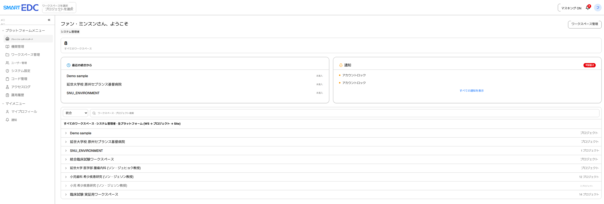
左側メニュー — 保有している権限に該当する項目だけが表示されます。権限のないメニューは一覧に表示されません。
続けて — 最近入ったワークスペースです。一覧の段階を経ず、直接移動します。
通知 — 未確認の通知が表示されます。
ワークスペース一覧 — アクセス権限のあるワークスペースが表示されます。選択すると配下のプロジェクトが展開されます。
コンテキスト切り替え — 現在のワークスペース・プロジェクトを表示し、どの画面からでも別のコンテキストに切り替えられます。
個人情報マスキング表示 — 権限によって被験者の識別情報を表示するかどうかが変わります。
注意事項
誤解しやすい動作
- • 遷移先の画面は3つに分かれます。通常はプラットフォームホームですが、セッションが期限切れになりログイン画面に戻った場合は直前に見ていた画面に復帰し、パスワード変更が強制された場合はパスワード変更画面に移動します。プラットフォームホームが表示されなくても、エラーではありません。
- • ログイン後30分間操作がないとセッションが期限切れになり、ログイン画面に戻ります。操作を続けていても、初回ログインから24時間が経過すると再度ログインが必要です。
パスワード再設定
- 2.1再設定の要求
- 2.2要求メールの確認
- 2.3新しいパスワードの設定
- 2.4入力チェック
- 2.5再設定後のログイン
2.1再設定の要求
概要
パスワードを紛失した場合は、登録済みのメールアドレスに再設定リンクが届きます。ログイン画面のパスワードをお忘れですか？から入ります（SCR-ACC-005）。
画面説明
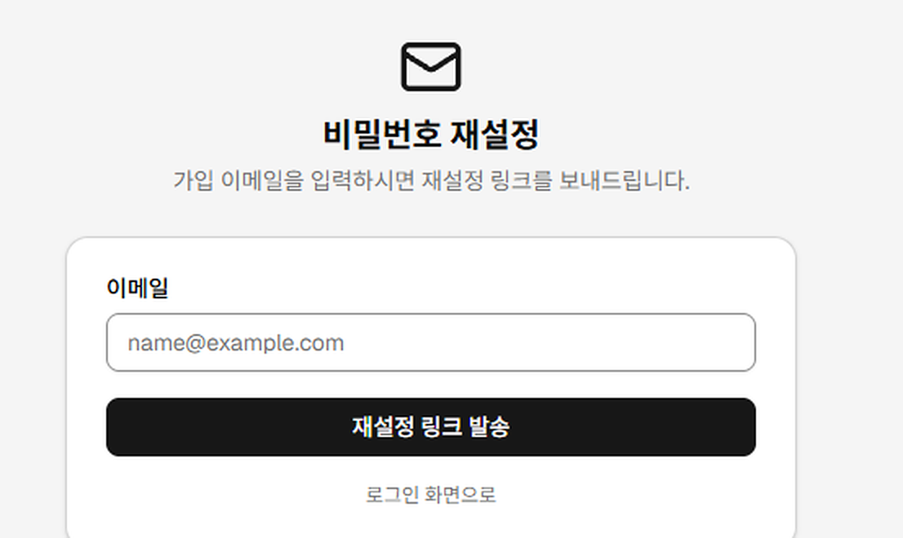
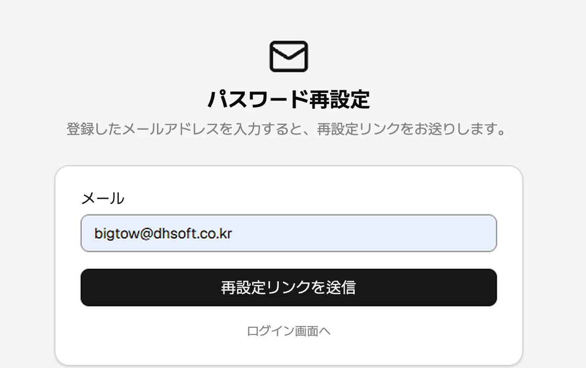
メール — アカウントとして登録されているメールアドレスを入力します。
入力したアドレスが表示されます。登録されていないアドレスを入力しても、同じ完了案内が表示されます。登録の有無が分からないよう、応答は区別しません。
再設定リンクを送信 — 入力したアドレスに再設定メールを送信します。
ログイン画面へ — 再設定を中止し、ログイン画面に戻ります。
注意事項
誤解しやすい動作
- • メールが届かない場合は、まず迷惑メールフォルダを確認してください。それでも見当たらない場合は、入力したアドレスがアカウントに登録されているアドレスと異なる可能性があります。
2.2要求メールの確認
概要
送信されたメールには、新しいパスワードを設定するリンクが含まれています。このリンクは1回だけ使用でき、メールに記載された時間が経過すると期限切れになります。
画面説明

パスワード再設定 — 選択すると新しいパスワードの設定画面が開きます。
送信元アドレスは送信専用です。このメールに返信しても届きません。
ボタンが動作しない環境では、下記のアドレスをブラウザのアドレスバーに直接貼り付けます。
有効期限が案内されます。期限切れの後にアクセスすると「再設定リンクの有効期限が切れています。もう一度要求してください。」が表示されるため、2.1で再度要求してください。
注意事項
必須確認 データ破損 · フォーム完了不可
- • 本人が要求していない再設定メールを受け取った場合は、リンクを選択せず、システム管理者に知らせてください。メールを無視すれば、既存のパスワードはそのまま維持されます。
誤解しやすい動作
- • リンクが使用できない理由は3種類に分けて表示されます。期限が過ぎた場合は「再設定リンクの有効期限が切れています」、アドレスが間違っている場合は「無効な再設定リンクです」、すでに再設定を終えたリンクの場合は「すでに使用された再設定リンクです」と表示されます。いずれの場合も2.1で再度要求します。
2.3新しいパスワードの設定
概要
メールのリンクから入ると、新しいパスワードを設定する画面が開きます。すべての条件を満たし、2つの入力欄の値が一致して初めて再設定を完了できます。
画面説明
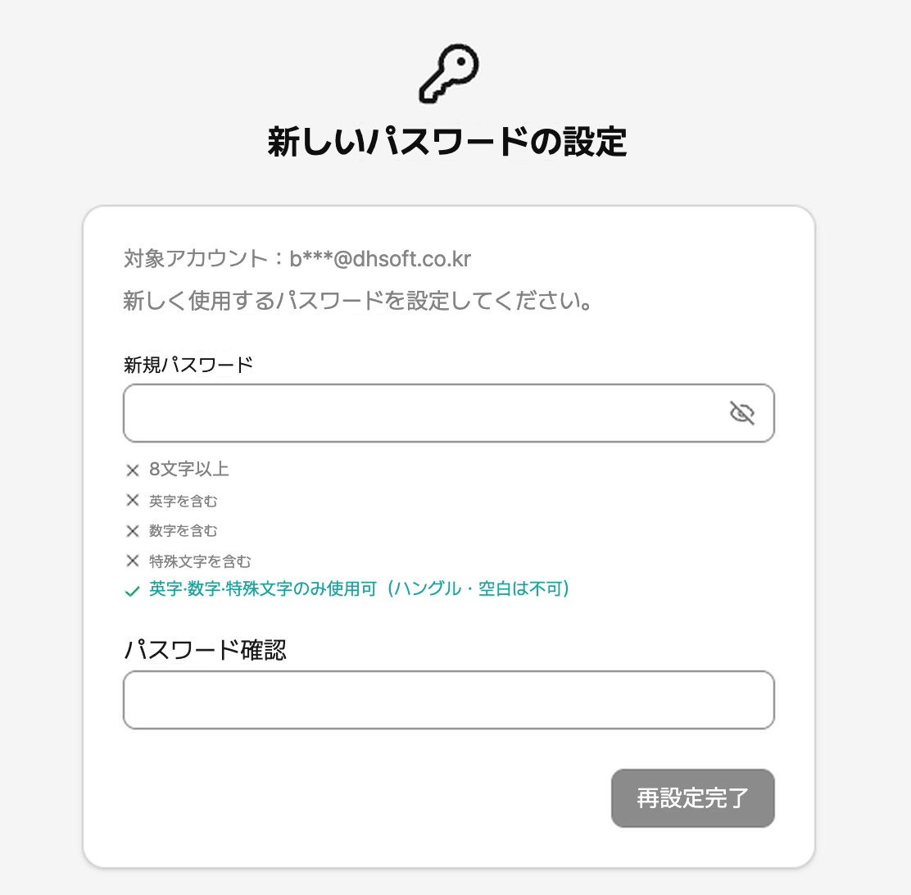
新規パスワード — 新しく使用するパスワードを入力します。
入力と同時に条件リストの充足状況が更新されます。満たした項目はチェックマークに変わります。
パスワード確認 — 同じ値をもう一度入力します。
再設定完了 — すべての条件を満たし、2つの値が一致するまで無効な状態を維持します。
対象アカウントは一部が隠された形で表示されます。意図したアカウントかどうか確認してください。
パスワード表示切替 — 入力した値を平文で確認します。
注意事項
誤解しやすい動作
- • 条件の具体的な内容と数は、システム設定によって変わる場合があります。画面に表示されたリストを基準にしてください。
2.4入力チェック① 条件未充足 · 不一致
概要
条件を満たしていない場合、または2つの入力欄の値が異なる場合は、その場ですぐにお知らせします。2つは別々のチェックなので、どちらか一方だけを解決しても完了はできません。
画面説明
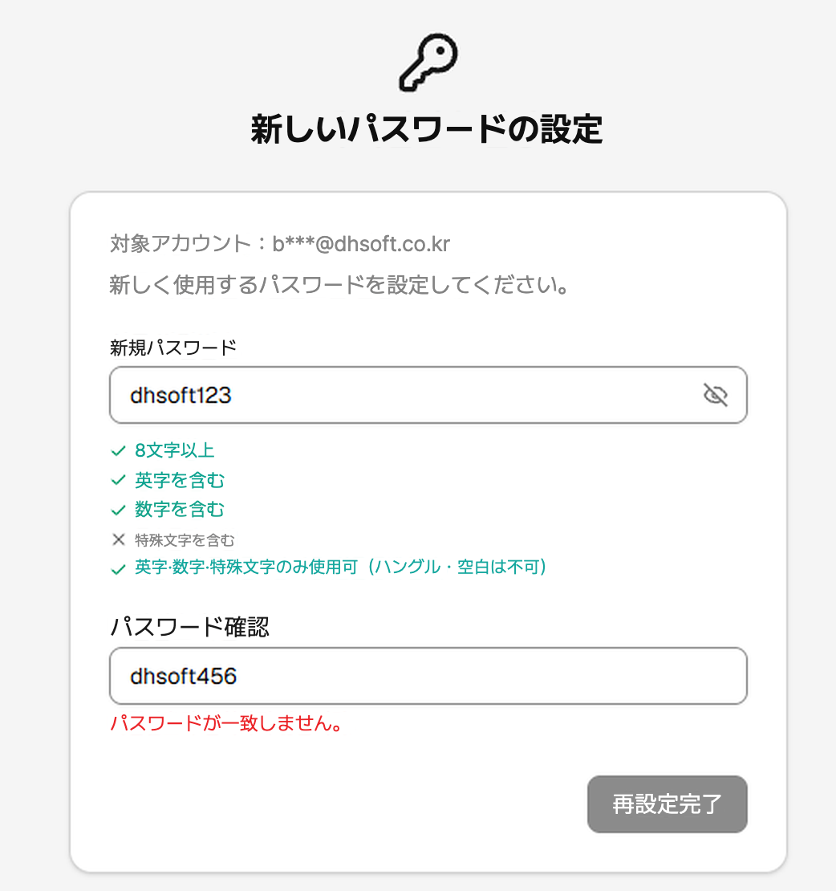
条件を満たさない値を入力した場合です。
満たしていない項目だけがグレーの✕で残ります。このリストで何が不足しているかを確認してください。
パスワード確認 に、前の値と異なる値を入力した場合です。
「パスワードが一致しません。」が入力欄の下に表示されます。
2つのチェックのうち、どちらか一つでも通過しない場合、再設定完了は無効な状態のままです。
注意事項
誤解しやすい動作
- • 条件リストは新規パスワードの入力欄だけを検査します。リストがすべて充足表示に変わっても、2つの値が異なる場合は完了できません。
2.4入力チェック② 条件充足
概要
すべての条件を満たし、2つの入力欄の値が同じになると、再設定を完了できる状態になります。
画面説明
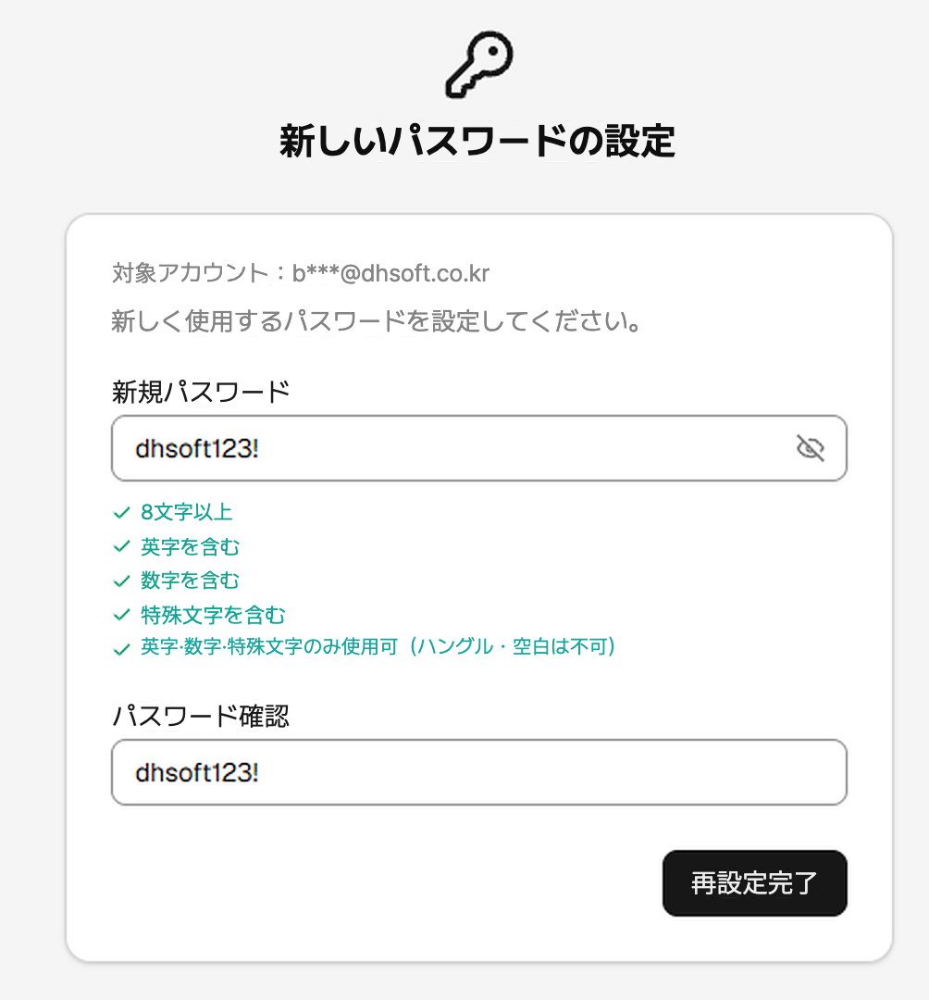
すべての条件を満たす値を入力した場合です。
リストのすべての項目が緑色のチェックマークに変わります。
パスワード確認 に同じ値を入力します。不一致の文言が消えます。
再設定完了 が有効になります。選択するとパスワードが変更され、ログイン画面に移動します。
注意事項
必須確認 データ破損 · フォーム完了不可
- • 再設定を完了すると、そのリンクは直ちに期限切れになります。同じリンクで再度アクセスしてパスワードを変更することはできません。新しいパスワードを確実に覚えてから完了してください。
2.5再設定後のログイン
概要
再設定が終わるとログイン画面に戻ります。自動ではログインされないため、新しいパスワードで再度認証する必要があります。
画面説明
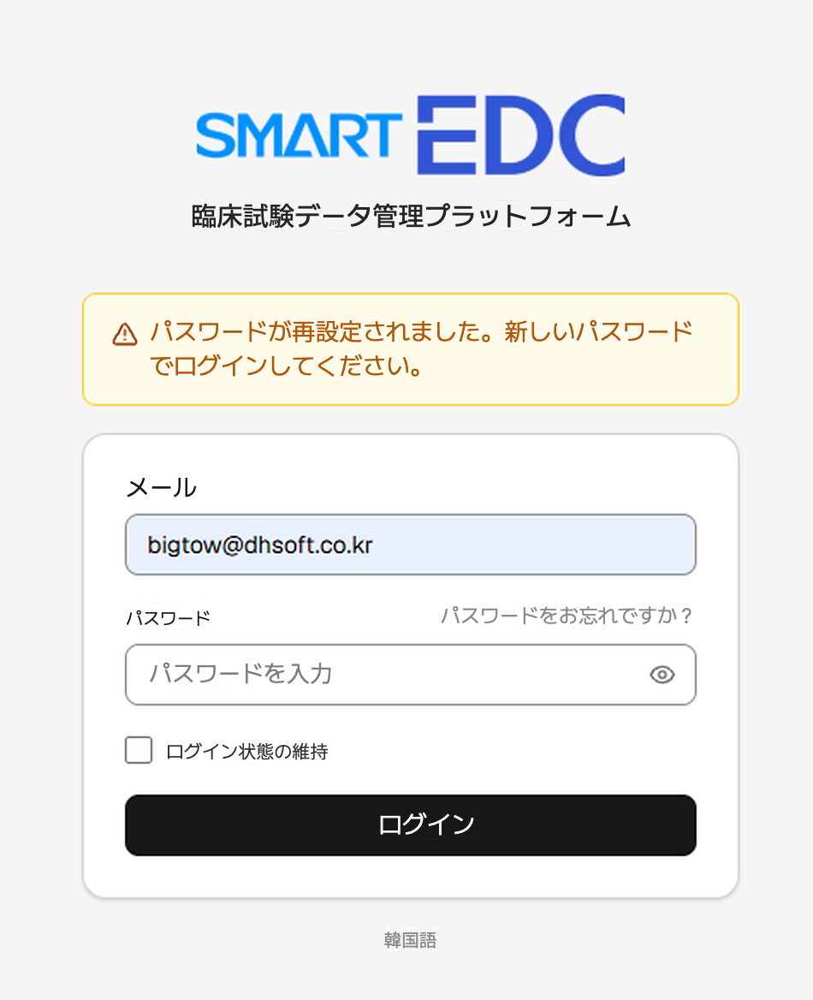
ログイン — 新しいパスワードで認証します。成功するとプラットフォームホームに移動します 1.4。
完了案内「パスワードが再設定されました。新しいパスワードでログインしてください。」が表示されます。
メール欄に値が入って見えるのは、ブラウザの自動入力によるものです。システムが入力した値ではないため、別のブラウザやシークレットウィンドウでは空欄になります。
パスワード入力欄は空の状態です。新しく設定したパスワードを入力してください。
注意事項
必須確認 データ破損 · フォーム完了不可
- • パスワードを再設定しても、既存の失敗の累積やアカウントロックは解除されません。ロックされたアカウントは、システム管理者が解除する必要があります 1.3。
ログアウト
- 3.1プロフィールメニューへの移動
- 3.2ログアウトの確認
3.1プロフィールメニューへの移動
概要
ログアウトは画面右上のプロフィールメニューから行います。このメニューには、アカウントに関する設定もまとめられています。
画面説明
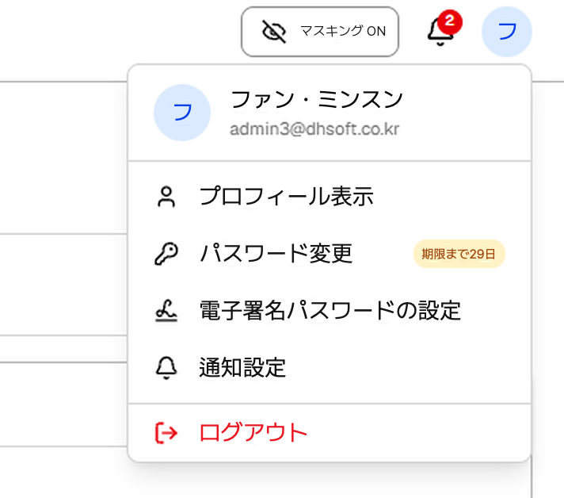
プロフィールアイコン — 選択するとアカウントメニューが開きます。どの画面でも同じ位置にあります。
現在ログインしているアカウントの名前とメールアドレスが表示されます。意図したアカウントかどうか確認できます。
ログアウト — 確認ダイアログが開きます 3.2。
パスワード変更 — 現在のパスワードがわかっている状態で変更する場合に使用します。横のバッジは有効期限までの残り期間です。
電子署名パスワードの設定 — ログインパスワードとは別の値です。
注意事項
誤解しやすい動作
- • パスワードは90日ごとに期限切れになります。期限が切れても業務がすぐに止まるわけではありません。案内ダイアログで変更を最大3回まで延期でき、延期の上限をすべて使い切った後に限り、次回ログイン時に変更画面につながり、変更するまで業務を進めることはできません。バッジに残り期間が表示されたら、早めに変更してください。
3.2ログアウトの確認
概要
ログアウトを選択すると確認ダイアログが開きます。確認するとセッションが終了し、ログイン画面に戻ります。
画面説明
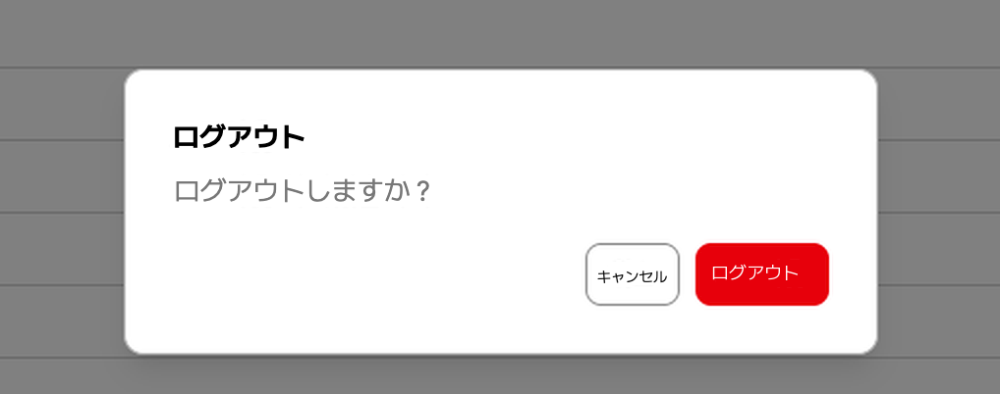
ログアウト — セッションを終了します。ブラウザの戻る操作で以前の画面に再び入ることはできません。
キャンセル — ログアウトを中止し、元の画面に戻ります。
確認メッセージ「ログアウトしますか？」が表示されます。
注意事項
必須確認 データ破損 · フォーム完了不可
- • 作成中の入力内容は、保存しないと保持されません。ログアウトする前に保存を完了してください。